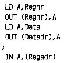
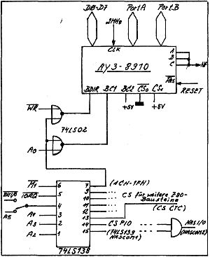

80-Bus Journal |
April/Mai/Juni 1984 · Ausgabe 2 |
Nachdem man beim Laden von Programmen vom Nascom oftmals auf eine Geduldsprobe gestellt wird, habe ich einmal das schnelle Cassetteninterface aus Elektor 10/82 nachgebaut. Es funktioniert bei mir nun seit einiger Zeit mit über 5000 Baud völlig problemlos. Zum Abspeichern verwende ich einen preiswerten Stereo- Radiorecorder. Wenn man auch zur Sicherheit bei der Aufnahme beide Stereokanäle zusammenschalten kann, so sollte man jedoch bei der Wiedergabe auf Grund von möglichen Phasenverschiebungen immer nur einen Kanal verwenden.
Wer schon einmal Versuche mit höheren Baudraten gemacht hat, wird vielleicht festgestellt haben, daß ab einer bestimmten Grenze nicht mehr alle Blöcke fehlerfrei einzulesen sind. Dies muß nicht unbedingt am Übertragungsverfahren liegen, sondern an Nassys! Beim READ- Befehl wird nämlich neben dem UART auch noch die Tastatur abgefragt, und ab etwa 8000 Baud, bei 2 MHz- Systemen entsprechend bei etwa 4000 Baud, können dadurch einzelne Bytes verlorengehen.
Und noch ein Tip für alle Nascom1 Besitzer, die auf möglichst einfache Weise auch Nascom2 Programme lesen können möchten: In der Funkschau, 16/83 war ein RTTY- Demodulator mit 4 Transistoren angegeben, welcher auch noch FSK- Signale nach dem Kansas- City-Standard mit 1200 Baud verarbeiten kann (es steht zwar nicht dabei, aber ich habe es ausprobiert.)
Der eine oder andere wird inzwischen sicher versucht haben, den Soundgenerator AY-3-8910 an seinem Nascom zu betreiben. Störend bei den bisher vorgestellten Interface- Schaltungen war, daß dadurch eine ganze PIO belegt wurde. Folgende einfache Schaltung zeigt, wie der PSG direkt am Bus betrieben werden kann. Es ist sowohl Schreiben wie auch Lesen der Register möglich, wodurch sich auch die beiden I/O- Ports voll nutzen lassen.
Hardwarebedingt muß zum Lesen der Register die Adresse verwendet werden, an die man sonst die Registernummer des PSG schreibt.
Der PSG läuft bei mir mit 2 MHz Taktfrequenz, die CPU mit 4 MHz.
;Schreiben und Lesen eines Registers


Wer kann mir zu einer Übersetzung der Handbücher
von ZEAP und NASDIS verhelfen?
Klaus Peter Schmidt
________. __
____ _______
_____/_____
| Seite 45 von 52 |
|---|